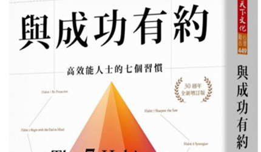

發￭燒￭資￭訊
▋電影賞析
重慶森林—嘗試用一整個月的鳳梨罐頭忘記你
對我來說，每年的四月一日到五月一日，是最適合買鳳梨罐頭的一個月，這都多虧王家衛導演的《重慶森林》，一部用兩段故事來講愛情的經典神作。第一個故事：警察223何志武 何志武有一段獨白，大致是說：「我們分手的那天是愚人節，所以我一直當她是開玩笑，我願意讓她這個玩笑維持一個月。從分手的那一天開始，我每天買一罐5月1號到期的鳳梨罐頭，因為鳳梨是阿May最愛吃的東西，而5月1號是我的生日。我告訴我自己，當我買滿30罐的時候，她如果還不回來，這段感情就會過期。」自從聽了這一段話後 ...
▋好書導讀

與成功有約：高效能人士的七個習慣
本書在敘述七個習慣之前，花了不少篇幅宣導兩件事情的重要性，首先是品德，在當時的美國非常崇尚個人的英雄主義，導致整個國家相關於成功書籍的文風都是在敘述個人魅力的重要性，也如同今日大家所崇拜賈伯斯、巴菲特等．他們不可複製的成功人格魅力，但大多數卻忽略了品德對於成功的重要性。 第二件就是思維邏輯，作者用到非常經典的三個圖，曾被多次引用來解釋思維對人看法的差異，如果你覺得下圖的女性臉很小，那在你眼中他是個年輕的女孩，若你覺得他臉很大，那同一張圖你看起，這位女性是 ...
▋好書導讀
心態致勝 : 全新成功心理學
天賦是與生俱來的嗎? 「喔! 不，OOO這是我的弱點，我天生對於OOO就是很不在行，是這個方面的弱者，家人跟朋友都這麼說，我想應該無法改變」(產生的定錨效應)；這句話似乎有點耳熟，或許在你我之間都曾經發生過，但是事實卻是如此嗎？或許這本書可以帶給你不同的想法與思維，讓我們從運動員的角度切入這個主題。 你所看到的運動員的，都是與生俱來的天才嗎?在鎂光燈的背後，他的努力不懈，你看不到。麥可．喬丹，在高中時期，連學校校隊都沒有被選上，大部分的人都會覺得很傷心與懊惱吧 ...
▋健康世界
更年期婦女之症狀介紹及治療
「更年期」是女性生命週期中一段自然過程，大約從45歲至55歲之間，平均年齡為51歲，隨著卵巢功能的衰退，導致女性荷爾蒙分泌的減少，直接影響女性生理週期的變化，發生內分泌失調與生理及心理都受影響而有不同程度的症狀表現，統稱之為「更年期症候群」。大約有三成左右婦女會產生一些更年期不適的身心症狀如：熱潮紅、心悸、情緒不穩定、失眠、皮膚萎縮、陰道乾澀等症狀，統稱「更年期障礙」。更年期的症狀根據臨床表現，可有月經改變、生殖泌尿道系統、血管收縮/舒張功能、心血管系統 ...